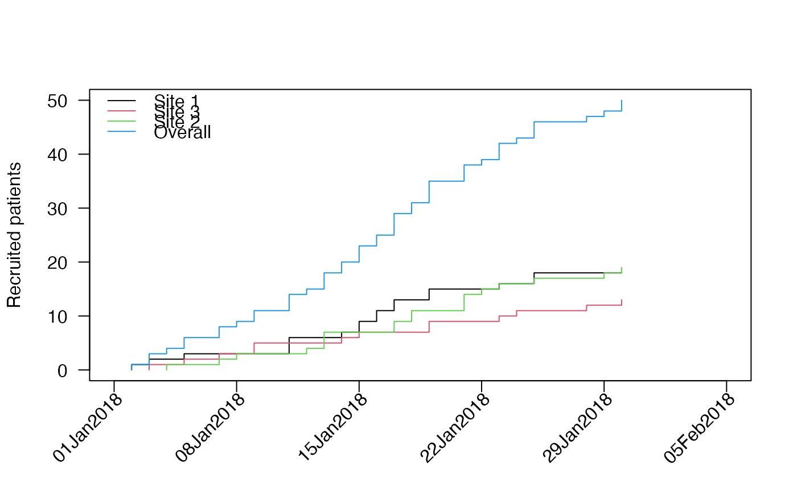
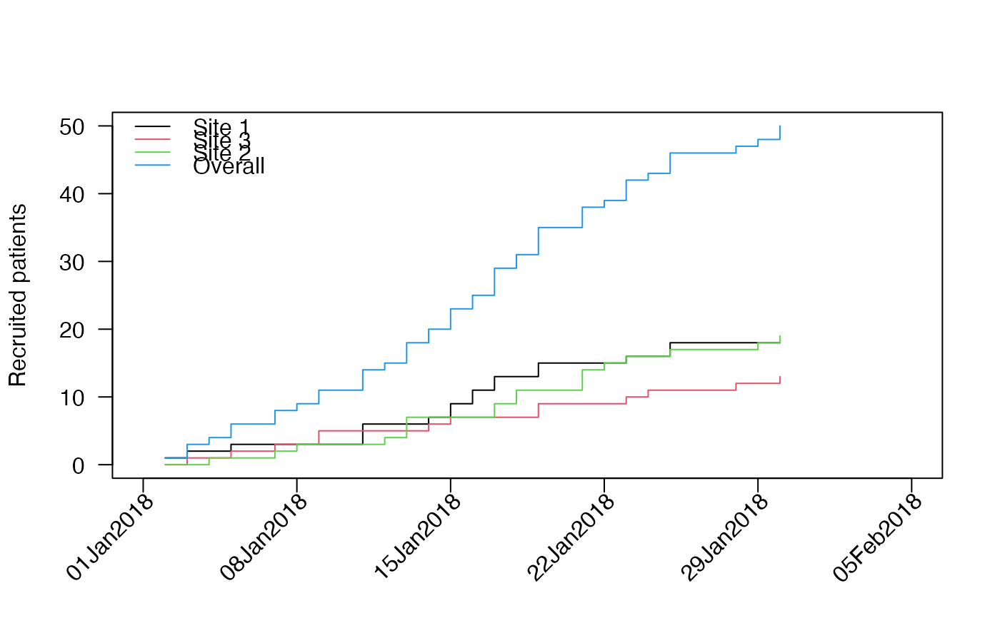
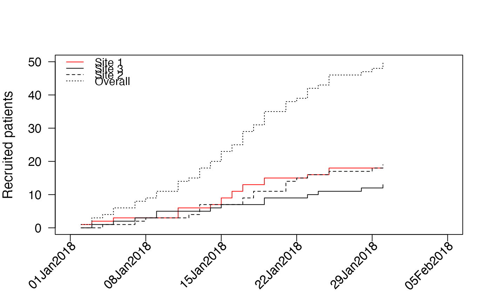
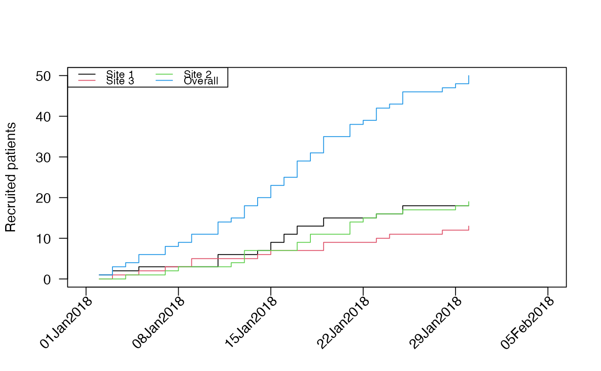
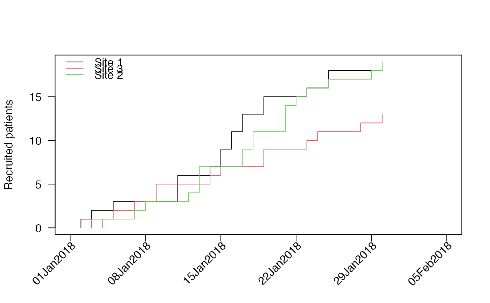

accrual_plot_cum.RdPlot of cumulative recruitment based on accrual data frame produced by accrual_create_df
accrual_plot_cum( accrual_df, overall = TRUE, name_overall = "Overall", start_date = NA, current_date = NA, ylim = NA, xlim = NA, ylab = "Recruited patients", xlabn = 5, xlabminn = xlabn%/%2, xlabformat = "%d%b%Y", xlabpos = NA, xlabsrt = 45, xlabadj = c(1, 1), xlabcex = 1, col = rep(1:8, 5), lty = rep(1:5, each = 8), legend.list = NULL, ... )
| accrual_df | accrual data frame produced by accrual_create_df potentially with by option (i.e. as a list) |
|---|---|
| overall | indicates that accrual_df contains a summary with all sites (only if by is not NA) |
| name_overall | name of the summary with all sites (if by is not NA and overall==TRUE) |
| start_date | start_date: date when recruitment started, single character or date, or "common" if the same date should be used for all sites, if not given the first enrollment date is used as start_date |
| current_date | date of the data export or database freeze, single character or date or "common" if the same date should be used for all sites, if not given the latest enrollment date is used for each site |
| ylim | limits for y-axis |
| xlim | limits for x-axis |
| ylab | y-axis label |
| xlabn | integer giving the desired number of intervals for the xlabel, default=5 |
| xlabminn | nonnegative integer giving the minimal number of intervals |
| xlabformat | format of date on x-axis |
| xlabpos | position of the x-label |
| xlabsrt | rotation of x-axis labels in degrees |
| xlabadj | adjustment of x-label, numeric vector with length 1 or 2 for different adjustment in x- and y-direction |
| xlabcex | size of x-axis label |
| col | color for line(s) in plot |
| lty | line types in plot |
| legend.list | named list with options passed to legend() |
| ... | further options passed to plot() and axis() |
A plot of the cumulative accrual, optionally by site.
accrual_plot_cum,accrual_plot_cum,accrual_plot_cum — accrual_plot_cum,accrual_plot_cum.Rd,character(0),accrual_plot_cum,character(0),list(title = "Description", contents = "Plot of cumulative recruitment based on accrual data frame produced by accrual_create_df
"),list(description = "Plot of cumulative recruitment based on accrual data frame produced by accrual_create_df"),accrual_plot_cum( accrual_df, overall = TRUE, name_overall = "Overall", start_date = NA, current_date = NA, ylim = NA, xlim = NA, ylab = "Recruited patients", xlabn = 5, xlabminn = xlabn%/%2, xlabformat = "%d%b%Y", xlabpos = NA, xlabsrt = 45, xlabadj = c(1, 1), xlabcex = 1, col = rep(1:8, 5), lty = rep(1:5, each = 8), legend.list = NULL, ... ),list(list(name = "accrual_df", description = "accrual data frame produced by accrual_create_df potentially with by option (i.e. as a list)
"), list(name = "overall", description = "indicates that accrual_df contains a summary with all sites (only if by is not NA)
"), list(name = "name_overall", description = "name of the summary with all sites (if by is not NA and overall==TRUE)
"), list(name = "start_date", description = "start_date: date when recruitment started, single character or date,\nor \"common\" if the same date should be used for all sites,\n if not given the first enrollment date is used as start_date
"), list(name = "current_date", description = "date of the data export or database freeze, single character or date\nor \"common\" if the same date should be used for all sites,\n if not given the latest enrollment date is used for each site
"), list(name = "ylim", description = "limits for y-axis
"), list(name = "xlim", description = "limits for x-axis
"), list(name = "ylab", description = "y-axis label
"), list(name = "xlabn", description = "integer giving the desired number of intervals for the xlabel, default=5
"), list(name = "xlabminn", description = "nonnegative integer giving the minimal number of intervals
"), list(name = "xlabformat", description = "format of date on x-axis
"), list(name = "xlabpos", description = "position of the x-label
"), list(name = "xlabsrt", description = "rotation of x-axis labels in degrees
"), list(name = "xlabadj", description = "adjustment of x-label, numeric vector with length 1 or 2 for different adjustment in x- and y-direction
"), list( name = "xlabcex", description = "size of x-axis label
"), list(name = "col", description = "color for line(s) in plot
"), list(name = "lty", description = "line types in plot
"), list(name = "legend.list", description = "named list with options passed to legend()
"), list(name = "...", description = "further options passed to plot() and axis()
")),TRUE,set.seed(2020) enrollment_dates <- as.Date("2018-01-01") + sort(sample(1:30, 50, replace=TRUE)) accrual_df<-accrual_create_df(enrollment_dates) accrual_plot_cum(accrual_df)accrual_plot_cum(accrual_df,cex.lab=1.2,cex.axis=1.1,xlabcex=1.1)#several sites set.seed(1) centers<-sample(c("Site 1","Site 2","Site 3"),length(enrollment_dates),replace=TRUE) accrual_df<-accrual_create_df(enrollment_dates,by=centers) accrual_plot_cum(accrual_df)#assuming a common start and current date accrual_plot_cum(accrual_df,start_date="common",current_date="common")#plot and legend options accrual_plot_cum(accrual_df,start_date="common",current_date="common", col=c("red",rep(1,3)),lty=c(1,1:3),cex.lab=1.2,cex.axis=1.1,xlabcex=1.1)#without overall accrual_df<-accrual_create_df(enrollment_dates,by=centers,overall=FALSE) accrual_plot_cum(accrual_df,start_date="common",current_date="common",overall=FALSE),list(list(title = "Value", contents = "A plot of the cumulative accrual, optionally by site.
", slug = "value")),2021,list(name = "accrualPlot", version = "0.3.5", authors = "Lukas Bütikofer"),list(destination = "dev", mode = "release", version_label = "default", version_tooltip = "Released version", in_dev = FALSE),list(root = "../", title = "accrualPlot"),list(),list(type = "default", left = "